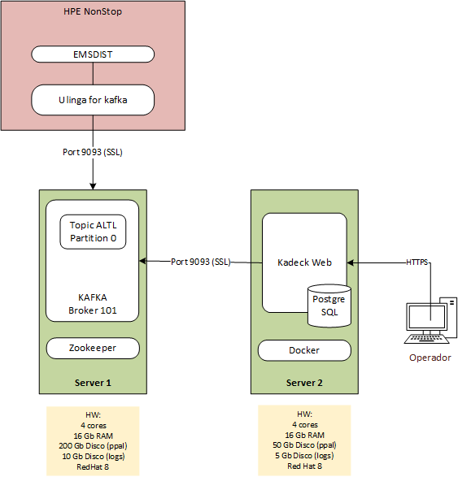
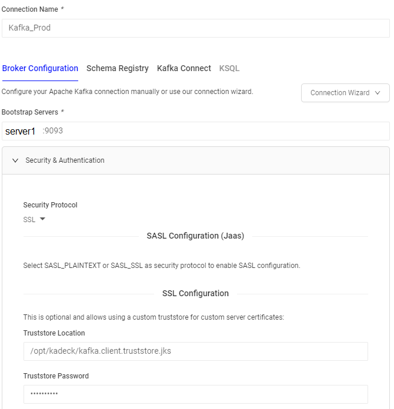

La infraestructura resultante se detalla en el siguiente esquema:
En los equipos Linux trabajados no se tuvo accesos a repositorios de internet o internos, por lo que se hace todo a mano mediante paquetes, según corresponda la distribución (RedHat 8 en este caso)
Instalarlo en los dos equipos con root:rpm -ivh jre-8u333-linux-x64.rpm
Seguir los pasos de la Quickstart
Se instaló en: /opt/kafka
systemctl start kafka
systemctl restart kafka
systemctl status kafka
Las configuraciones quedan en
/etc/systemd/system/zookeeper.service
/etc/systemd/system/kafka.service
Arranque automático al iniciar el servidor:systemctl enable zookeeper
systemctl enable kafka
./kafka-topics.sh --create --topic altl --bootstrap-server localhost:9092 --partitions 1 --replication-factor 1
Certificados y configs en: /opt/kafka/ssl
A) Generando la CA
openssl req -new -newkey rsa:4096 -days 1825 -x509 -subj "/CN=Kafka-Security-CA" -keyout ca-key -out ca-cert -nodes
B) Creando la keystore
export SRVPASS=serversecret
keytool -genkey -keystore kafka.server.keystore.jks -validity 1825 -storepass $SRVPASS -keypass $SRVPASS -dname "CN=Server1" -ext SAN=IP:X.X.X.X -storetype pkcs12 -keyalg RSA
Para verificar:
keytool -list -v -keystore kafka.server.keystore.jks
C) Firmando el certificado con la CA del paso 1
keytool -keystore kafka.server.keystore.jks -certreq -file cert-file -storepass $SRVPASS -keypass $SRVPASS
openssl x509 -req -CA ca-cert -CAkey ca-key -in cert-file -out cert-signed -days 1825 -CAcreateserial -passin pass:$SRVPASS
D) Importo la CA en la truststore
keytool -keystore kafka.server.truststore.jks -alias CARoot -import -file ca-cert -storepass $SRVPASS -keypass $SRVPASS -noprompt
E) Importar certificado firmado y CA en la keystore
keytool -keystore kafka.server.keystore.jks -alias CARoot -import -file ca-cert -storepass $SRVPASS -keypass $SRVPASS -noprompt
keytool -keystore kafka.server.keystore.jks -import -file cert-signed -storepass $SRVPASS -keypass $SRVPASS -noprompt
F) Generar truststore para el cliente:
El siguiente truststore es necesario para iniciar una conexión desde un consumidor/productor. Y va a ser usado por kadeck:
export CLIPASS=clientpass
keytool -keystore kafka.client.truststore.jks -alias CARoot -import -file ca-cert -storepass $CLIPASS -keypass $CLIPASS -noprompt
G) Como método de pruebas, se pueden iniciar productores y consumidores de línea de comando apuntando a la config SSL:
./kafka-console-producer.sh --bootstrap-server Server1:9093 --topic altl --producer.config /opt/kafka/sslclient/client.properties
./kafka-console-consumer.sh --bootstrap-server Server1:9093 --topic altl --consumer.config /opt/kafka/sslclient/client.properties
/opt/kafka/config/server.properties
Se configura el puerto 9093 y los certificados para la conexión SSL
|
listeners=PLAINTEXT://:9092,SSL://:9093 advertised.listeners=PLAINTEXT://LNK5120:9092,SSL://LNK5120:9093 ssl.keystore.location=/opt/kafka/ssl/kafka.server.keystore.jks ssl.keystore.password=serversecret ssl.key.password=serversecret ssl.truststore.location=/opt/kafka/ssl/kafka.server.truststore.jks ssl.truststore.password=serversecret ## Se modificó ubicación de los logs: log.dirs=/kafka/kafka-logs ## Se modificó la retención de logs a 15 días: log.retention.hours=360 |
Subvol de instalación: $DATA12.ULINGA
Obey de arranque: GOULK
Para configuración de SSL: una vez iniciada la conexión, el archivo UNKNCRTS contiene el certificado del Server1, esta cadena de texto completa debe ser copiada al final del archivo ROOTCRTS para que reconozca el certificado y establezca la conexión SSL correctamente.
Manuales de instalación y soporte
Se instaló Docker (necesario para instalar/ejecutar Kadeck) en el equipo Server2 (SO: Red Hat 8)
Comandos que se usaron para instalar los paquetes (se usaron paquetes de CentOS 8.0):
yum erase buildah
yum install docker-ce-cli-20.10.17-3.el8.x86_64.rpm
yum install containerd.io-1.6.6-3.1.el8.x86_64.rpm --allowerasing
yum install libcgroup-0.41-19.el8.x86_64.rpm
yum install docker-ce-rootless-extras-20.10.17-3.el8.x86_64.rpm docker-ce-20.10.17-3.el8.x86_64.rpm
yum install docker-compose-plugin-2.6.0-3.el8.x86_64.rpm
IMPORTANTE:
Docker inicia una interfaz ethernet virtual (docker0) que funciona de bridging para los contenedores. La IP que viene por defecto entra en conflicto con la del servidor y al iniciar el daemon se pierde la conexión por SSH. Se debe cambiar la IP de la siguiente manera:
Modificar el archivo /lib/systemd/system/docker.service en la línea que comienza con ExecStart agregar al final --bip "192.168.1.1/24". En Server2 quedó de la siguiente manera:
|
ExecStart=/usr/bin/dockerd -H fd:// --containerd=/run/containerd/containerd.sock --bip "192.168.1.1/24" |
systemctl start docker
systemctl restart docker
systemctl status docker
systemctl enable docker
systemctl enable containerd
Kadeck almacena información en una base de datos (PostgreSQL) externa, para ello se instaló el motor de BD y se inicializó una BD para el producto, de la siguiente manera:
Instalación:
dnf install -y postgresql14-libs-14.4-1PGDG.rhel8.x86_64.rpm
dnf install -y lz4-1.8.3-3.el8_4.x86_64.rpm
dnf install -y postgresql14-14.4-1PGDG.rhel8.x86_64.rpm
dnf install -y postgresql14-server-14.4-1PGDG.rhel8.x86_64.rpm
Config inicial y seteo de servicio:
/usr/pgsql-14/bin/postgresql-14-setup initdb
systemctl enable postgresql-14
systemctl start postgresql-14
Seteo de usuario root para la BD:
sudo -u postgres createuser root
En psql:
ALTER USER root WITH PASSWORD 'root';
Creación de la base de datos:
createdb kadeckweb
La base de datos se almacena en el siguiente directorio: /var/lib/pgsql/14/data (puede visualizarse con psql -c "show data_directory;")
A) Instalación:
Se baja la imagen desde un Linux con acceso a internet con el siguiente comando:
docker run -d -p 34500:34500 --name=kadeckweb --network=host -e xeotek_kadeck_secret=enviado_por_el_proveedor -e xeotek_kadeck_teamid=enviado_por_el_proveedor -e xeotek_kadeck_port=34500 --rm xeotek/kadeckweb:3.2.2
Se creó un tar de la imagen:
docker save xeotek/kadeckweb:3.2.3 > kadeckweb.tar
Se copió al destino (Server2) y se cargó en el repositorio de Docker
docker load < kadeckweb.tar
B) Inicio de la aplicación:
En el directorio /opt/kadeck se encuentan los siguientes archivos:
kafka.client.truststore.jks: truststore cliente que se generó en el paso 3.D) de instalación de Kafka
runkadeck.sh: script de arranque de kadeck (contiene toda la config necesaria como puertos, certificados, base de datos, etc.)
C) Conexión a Kafka SSL:
